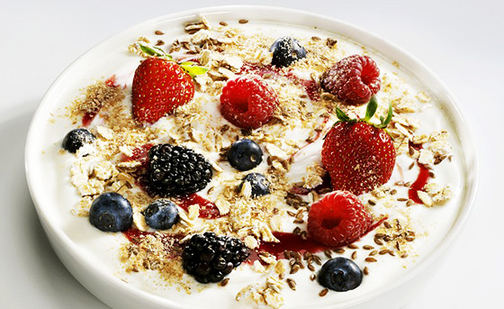

Single Post

NEW CHILLS FOR SUMMER
By Founder on March26, 2026Quenching your thirst is the need of the hour to beat the scorching heat this summer.Keeping this in mind we have introduced healthy wholesome meal versions of yougurt with all types of sundried seeds , quinoa, oats and topped with all seasonal fruits.
You can top your yougurts with the toppings , fruits of your choice and have a wholesome weal p> back to blog
Recent Posts

ON THE DIET
By CEO "FREEZE" The Frozen Yougurt Shop", 2026Keeping in ming with the increase in rate of health issues faced by every age group these days. We have come up with healthier versions of yougurt to beat the heat and serve a wholesome meal.
Read More